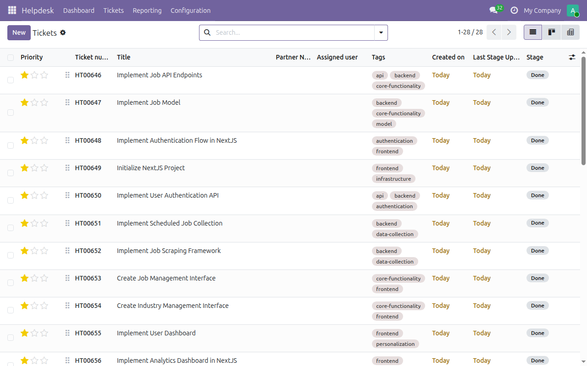

<section class="oe_container">
    <div class="oe_row oe_spaced">
        <h2 class="oe_slogan">Helpdesk GitHub Sync</h2>
        <h3 class="oe_slogan">Turn GitHub issues into Odoo Helpdesk tickets</h3>
        <p>
            Link an OCA Helpdesk team to a GitHub repository and its issues are
            imported as tickets by a scheduled job.
        </p>
        <ul>
            <li><b>v1 (current):</b> one-way sync of GitHub issues into Odoo Helpdesk tickets, with a scheduled job.</li>
            <li><b>v2:</b> two-way sync, so changes to an Odoo ticket update the issue, plus webhooks for near-real-time updates.</li>
            <li><b>Later:</b> GitHub Projects boards.</li>
        </ul>
        
        <p>
            Setup and development notes are in the
            <a href="https://github.com/lloydvheremu/helpdesk_mgmt_github">README on GitHub</a>.
        </p>
    </div>
</section>
